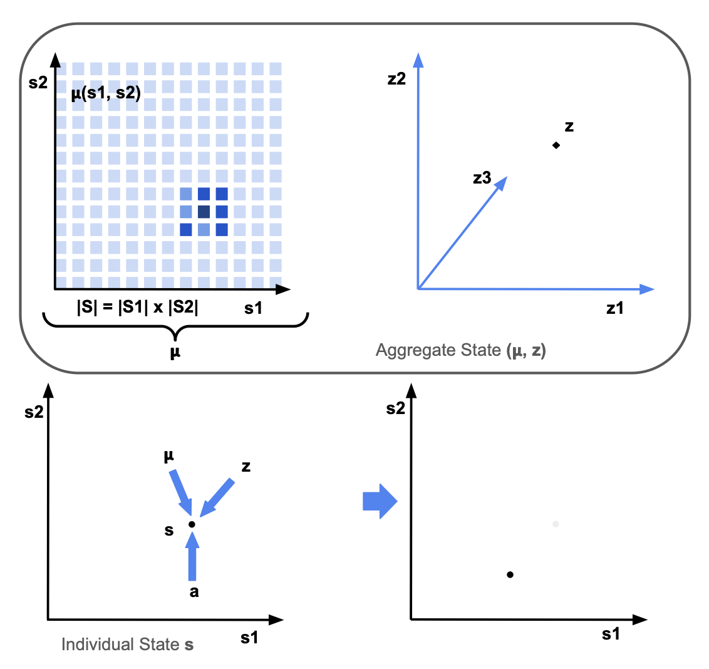
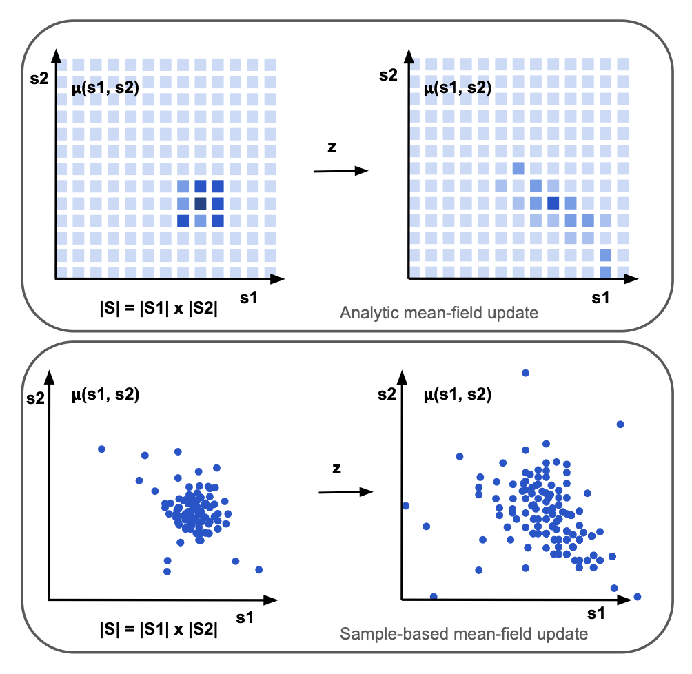
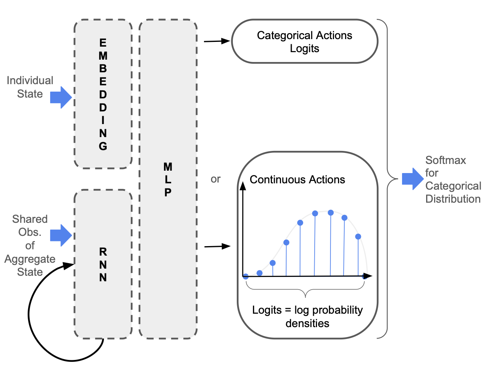

Recurrent Structural Policy Gradient for Partially Observable Mean Field Games
In this Blog Post, I will introduce Recurrent Structural Policy Gradient (RSPG), a Hybrid Structural Method (defined below) that learns history-dependent policies for Partially Observable Mean Field Games with Public Information.
RSPG leverages two assumptions that are natural in many of the situations that we want to model.
- Individual State-Space is Low Dimensional: the individual state-space, over which the mean-field is defined, is low dimensional.
- Public Information: As well as knowing their individual state \(s_t\), agents receive shared observations of the aggregate state, \(o_t = \mathcal{U}(\mu_t, z_t)\).
The first assumption is necessary for Hybrid Structural Methods in general, not just Recurrent Structural Policy Gradient. For example, the mean-field might be two-dimensional, over wealth and income in macroeconomics, or energy and interference in communication systems, or one-dimensional, over infection status in epidemiology. Regarding the second assumption, the public information might be stock prices, interest rates, reported infection levels or communication signals.
The main idea is that, because individual states are known, and observations of the aggregate state are shared, memory can be restricted to the history of shared aggregate observations. The intuition is that since agents directly observe their individual states, they only need to maintain a belief in the aggregate state. The main benefit is that we only have one history, rather than a number of histories that grows exponentially with time.
This way, RSPG maintains the same rate of convergence as memoryless Hybrid Structural Methods, while still allowing more realistic, history-dependent behaviour to be learned.
Mean Field Games with Common Noise
Mean-Field Games (MFGs) provide a principled framework for modelling interactions in large population systems. By assuming that individuals respond only to the aggregate behaviour of other agents and that they share the same state-conditioned objective, reward, transition, and observation functions, MFGs reduce the analysis of a large population model to the interaction between a stand-in agent and the mean field \(\mu_t\).
In MFGs with common noise, uncertainty enters through aggregate shocks that affect the entire population simultaneously. While idiosyncratic noise marginalises out at the population level, common noise induces stochastic evolution of the mean-field. The resulting Markovian aggregate state \((\mu_t, z_t)\) consists of the mean-field \(\mu_t\), a distribution over the individual state space \(\mathcal{S}\), and the common noise \(z_t\), which captures all remaining state components.

Dynamic Programming, Reinforcement Learning & Hybrid Structural Methods
In MFGs with common noise, the policy is usually updated by computing the value associated with the current policy and then taking a greedy step to improve that policy. This is a sample-based update, and is computationally tractable.
Analytic vs. Sample-Based Mean-Field Updates: A structural method's core advantage stems from avoiding noisy multi-agent sampling. Instead of re-approximating density across sample paths, an Analytic Update uses a white-box matrix "Pushforward" wrapper to transition the vector distribution exactly:

Partially Observable Mean Field Games with Common Noise
Despite achieving superior sample efficiency, HSMs have been historically confined to fully observable settings, where every agent perfectly knows the global population distribution \(\mu_t\). In realistic economic networks or structural markets, this assumption fails; agents face partial observability.
Extending HSMs to partially observable settings causes an immediate curse of dimensionality. Because agents select actions based on their Individual-Action-Observation Histories (IAOH) \(\tau_t\), calculating the update requires maintaining an aggregate state matrix distribution \(\tilde{\mu}_t\) over the entire history space \(\mathcal{H}_t\):
Because the space of individual observation paths \(\mathcal{H}_t\) grows exponentially with time, propagating these equations explicitly becomes totally intractable, breaking down the unified state mesh required by HSMs.
Recurrent Structural Policy Gradient
Our framework, Recurrent Structural Policy Gradient (RSPG), breaks this computational bottleneck under public information.
The Structural Principle: Because private states are known and public metadata observations are shared across the system, agents only need to maintain a recurrent belief distribution over the aggregate common noise state. Long-term individual memory can safely be restricted strictly to the history of shared public observations \(o_{0:t}\). This ensures that the infinite branching tree of individual trajectories collapses back down into a single, shared historical trajectory, preserving the exact low-variance benefits of analytic structural methods.
The Practical Implementation: We built MFAX, an open-source,
highly accelerated JAX framework to translate this concept into software. MFAX harnesses functional
programming primitives like jax.vmap to perform fast piecewise-linear density
interpolation over structural grids, and utilizes jax.lax.scan to map recurrent history
gradients sequentially over long operational horizons.

By structuring policy gradients around shared public observation pipelines, RSPG bridges history-aware multi-agent systems and exact structural reinforcement learning, enabling fast, low-variance convergence in highly complex structural games.